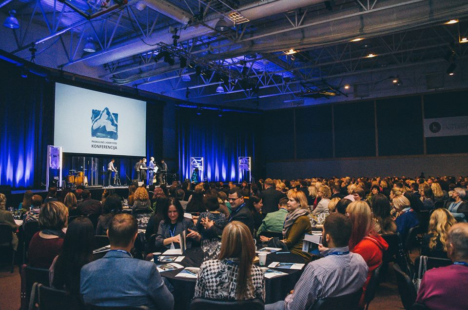

Hacker Games

H A C K E R G A M E S is an event that pools eager entrepreneurs, software developers, micro:bit enthusiasts and engineers into a confined space for two days and challenges them to create a cool killer product. The 13th Hacker Games hackathon will gather the best hackers to make their ideas come true on 26-28th of October at Klaipėdos mokslų ir technologijų parkas. It is your chance to make an impact on tomorrow’s world. As always, we will have some significant prizes, so keep a close eye on updates! We are looking for people who are motivated to solve real problems, people who are capable to develop fine products, people who are passionate about innovation and ready to escape from their daily routines. You can do whatever you want – create a new carpooling app, design a next world-wide known game, some SaaS solution or build a cool gadget for Internet of Things lovers. The only condition here is that you create something from scratch

Global Leadership Summit

The Global Leadership Summit is a world-class experience designed to help leaders get better. Broadcast LIVE in HD from Willow's campus near Chicago to over 375 Premier Host Sites in North America and later around the world